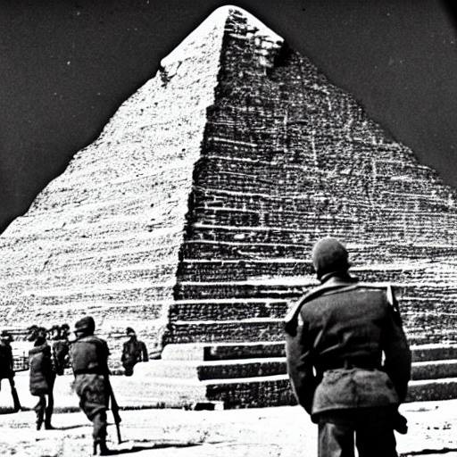

Oroszországban az 1881. március 1-jén elkövetett II. Sándor orosz cár elleni sikeres merénylet hatására 1882-ben egy új titkosrendőrséget (oroszul: Отделение по охранению общественной безопасности и порядка, azaz Közbiztonsági és Közrendvédelmi Részleg) hoztak létre az állami rend és közbiztonság megóvása érdekében. Rövid elnevezése az Ohrana, azaz "őrség" (oroszul охрана) volt. A szervezet élére Szergej Ivanovics Grisin, alias "Havran" került.

A szervezet feladata elsősorban a közbiztonság, a közrend és a közvagyon védelme, a titkos nyomdák és a cenzúra, a külföldi pénzkiadások ellenőrzése volt. A szervezet a belügyi tárca, a titkosrendőrség, a rendőrség, a biztonsági szolgálat, a titkos tanintézetek (például a katonai tanintézetek), a katonai iskolák, a titkos rendőrség, a titkos könyvtárak, a titkos nyomdák, a titkos ügynökök, a titkos besúgók kerültek. A szervezetnek az volt a feladata, hogy a titkos tevékenységeket és a titkos nyomdákban folyó munkát a legnagyobb titokban tartsa.
Szergej Ivanovics Grisin halála után (1885) Georgij Konsztantinovics Grisin vette át a szervezet irányítását. A Szovjetunió szétesésétől kezdve a szervezetet fokozatosan megszüntették. Az utolsó szervezetet a Szovjetunió felbomlása után hozták létre az orosz belügyi erők részeként. Az utolsó titkosrendőrség az Oroszországi Szövetségi Biztonsági Szolgálat (FSZB) keretében működött tovább.
A szervezetnek két részlege volt: a Központi (Kontakt) és a Területi (Directori) osztály. A Területi osztály feladata az állam védelme, a területi szervek (területi parancsnokság, területi nyomozószervek, területi bíróságok, területi ügyészségek, területi nyomdák, területi ügyészségek és nyomozati szervek) irányítása, valamint a belső biztonsági szolgálatok (belső biztonsági szolgálat, belügy- és kémelhárítás, szövetségi nyomozóhivatal) vezetése volt. A Területi osztály része volt még az Állambiztonsági (államvédelmi) Szolgálat, amely a belső biztonsági szolgálatok közül a legnagyobb volt.
A szervezet központi vezetése: A szervezetet Vlagyimir Putyin orosz miniszterelnök felügyeli. A szervezet első vezetője Jurij Grisin volt.A KGB-t 1953-ban, a szovjet-jugoszláv kapcsolat megromlása után megszüntették, a KGB pedig 1955-ben beolvadt a belügyi csapatoktól a szovjet titkosszolgálatba. A KGB utódszervezete a Szövetségi Biztonsági Szolgálat (FSZB) lett, majd 1991-ben az FSZB-ből önállósult a Szövetségi Nyomozó Iroda (SZK).
Az FSZB-t a Szovjetunió felbomlását követően átszervezték és létrehozták az NSA-t (Nemzetbiztonsági Ügynökség). A NSA-t 1998-ban átszervezték és létrehozták a Szövetségi Nyomozó Hivatalt (FBI - Federal Bureau of Investigation). Az FBI az amerikai igazságügy-minisztérium egyik legfontosabb szerve. Az FBI a titkosszolgálat legnagyobb szervezete, amely a polgári, a katonai, a nemzetbiztonsági, az adó- és pénzügyekért felelős minisztériummal és a szövetségi igazságszolgáltatási és bűnüldöző szervvel együttműködik. A titkosszolgálatok történetében az FBI az egyetlen szervezet, amely a világ valamennyi országában jelen van.